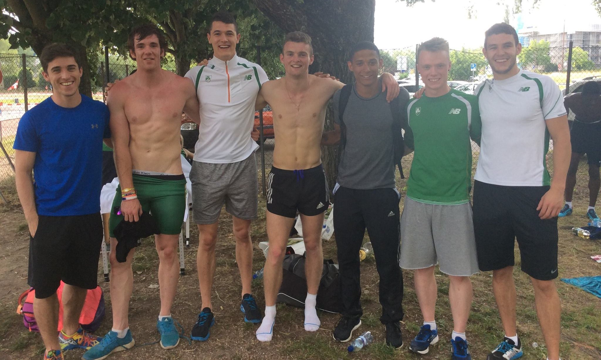
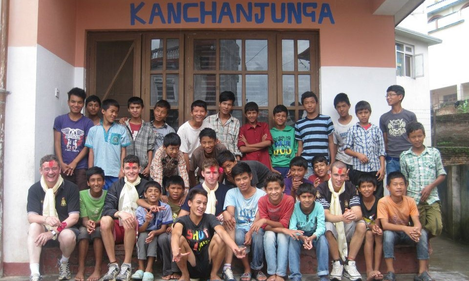

I am a 25 year old athlete, student and coach from Rathfarnham, Dublin. I compete in athletics as a 100m and 200m sprinter. I have a keen interest in sport but I have always had a passion for computers, gaming, travelling and food! I have a Bachelor of Science degree in Physiotherapy from UCD which I attained in 2016.
I also love to travel and have visited a wide range of places around the world. Some of my favourites places include Nepal, Los Angeles, New York and Finland. My favourite part of travelling is getting the chance to try new and different foods and when I am not jet setting I love to visit food markets or restaurants across Dublin.
I compete both nationally and internationally as a sprinter and I have represented Ireland as a member of the 4x100m relay panel - one of my proudest achievements to date. I have played other sports such as swimming, rugby, football and long distance running and I plan to play american football once retired from athletics!
